Most agent benchmarks leak action meaning through button names. AlienBody randomizes mappings and runs controlled interventions — separating how agents acquire action knowledge from how they use it.
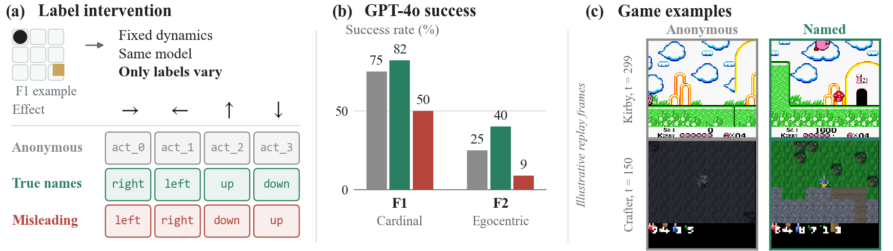
Phase 1 = probe anonymous buttons. Phase 2 = reach the revealed target.
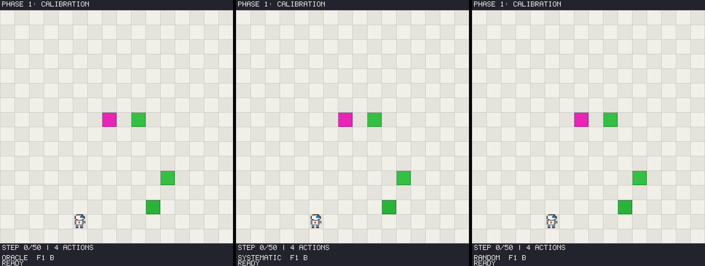
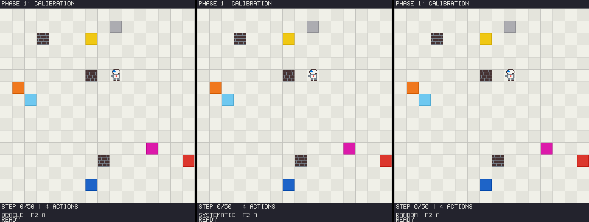
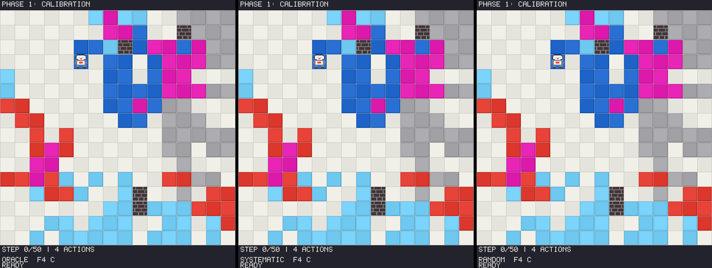
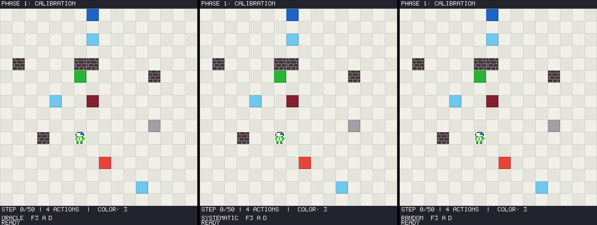
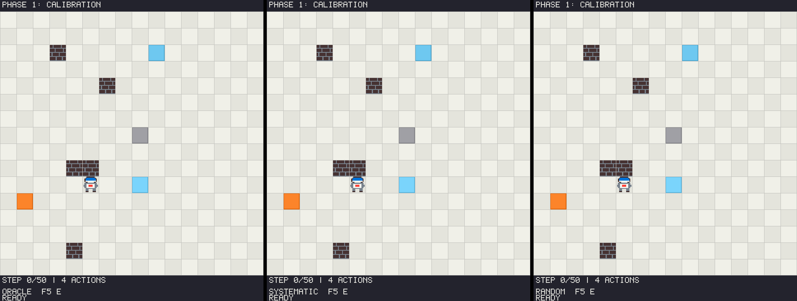
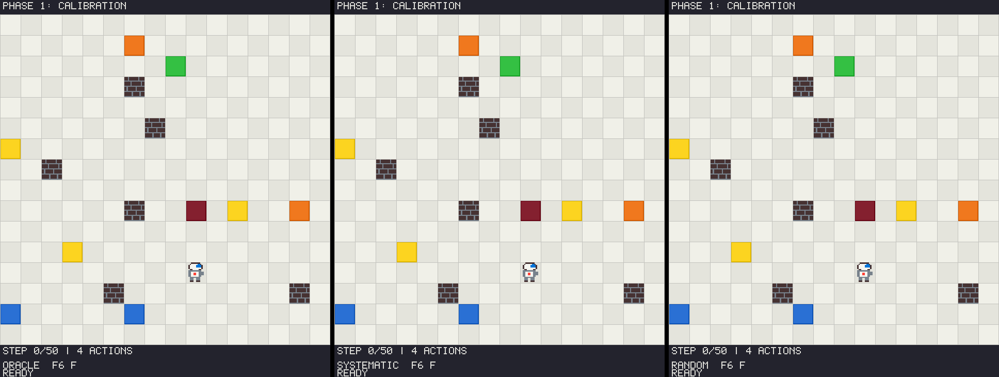
Qwen3.5-4B trajectories re-rendered from evaluation logs (no re-query).
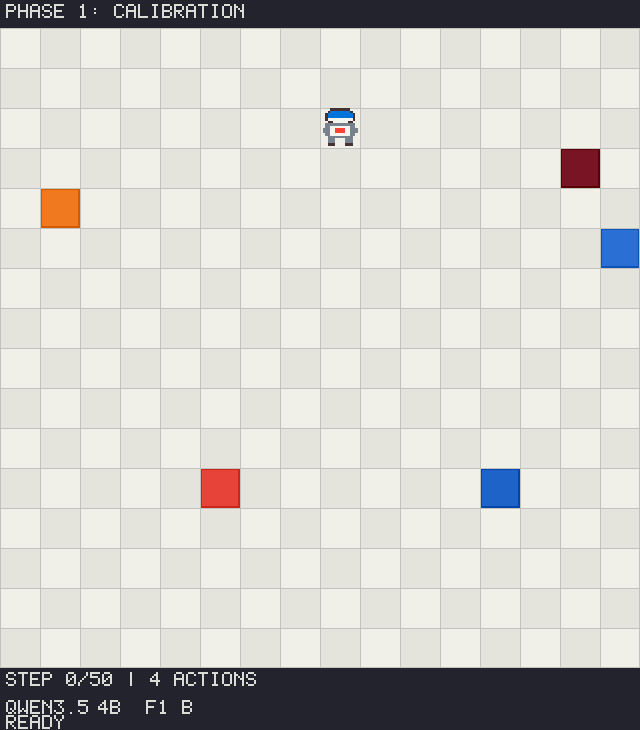
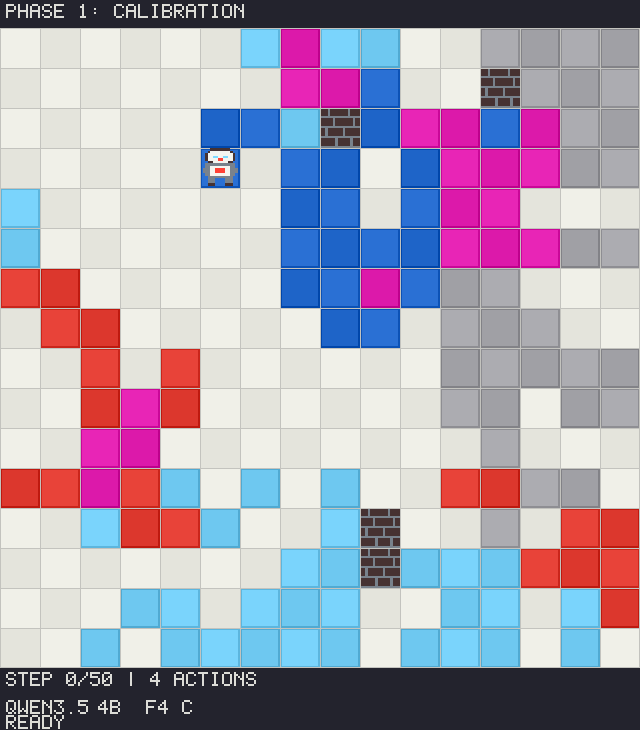
named vs anonymous — matched steps, same visual protocol.
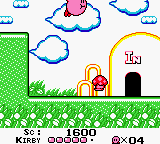
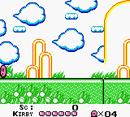
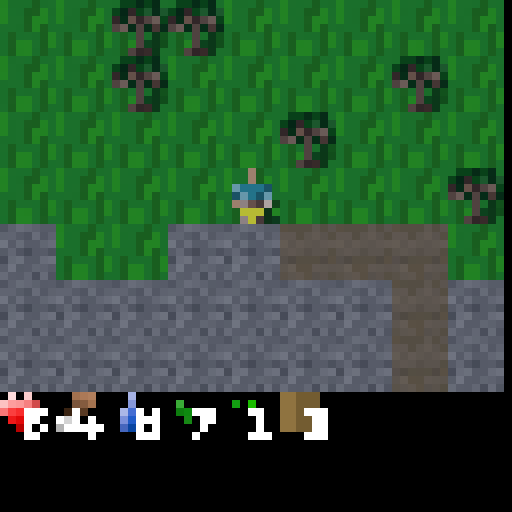
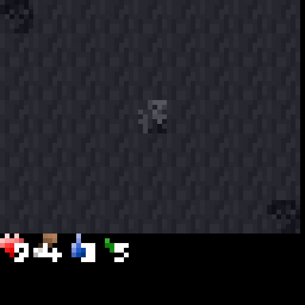
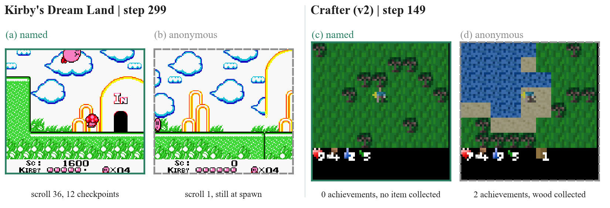
pip install -r requirements.txt python scripts/run_eval.py --agent oracle --family 1 --split test --n-envs 3 python web/app.py # local interactive demo
Full layout, deploy notes, and citation stub: repository README.